Страус -самая крупная птица на Земле, поэтому хорошо известен большинству людей. Раньше к страусам относили и другие близкородственные виды птиц — нанду и эму, но современные систематики выделяют их в отдельные отряды, поэтому с научной точки зрения сейчас существует лишь один вид настоящих страусов — африканский страус. Нанду и эму сохранили за собой старые названия американского и австралийского страусов, хотя они и не соответствуют современному систематическому положению этих видов.
Африканский страус.
Огромный размер — вот, что первым бросается в глаза при взгляде на страуса, ведь в высоту эта птица не уступает крупной лошади. Высота страуса от кончиков лап до макушки 1,8-2,7 м, вес в среднем 50-75 кг, но самые тяжелые самцы могут весить до 131 кг! Конечно, большая часть высоты птицы припадает на длинные ноги и шею, а вот голова у страуса, наоборот, очень маленькая по сравнению с размером тела. Еще мельче мозг, который у страусов не превышает величины грецкого ореха. Такой маленький размер мозга обуславливает низкий уровень интеллекта этих птиц и указывает на их примитивность.
Самка африканского страуса.
Кроме того, во внешнем и внутреннем строении страуса достаточно и других примитивных признаков. Например, перья у страусов растут равномерно по всему телу, в то время как у большинства птиц они расположены по особым линиям — птерилиям. Такое расположение перьев встречается еще у нанду, эму, казуаров, киви и пингвинов. Сами перья не имеют структурированного опахала, вторичные бородки пера не сцеляются друг с другом, а выглядят рассученными. У страусов отсутствует киль грудины, так как грудные мышцы у них сравнительно слабо развиты, поэтому страусы совершенно неспособны к полету. Зато ноги страуса отменно приспособлены к бегу. Во-первых, длинные лапы имеют мощную мускулатуру, во-вторых, у страуса на лапах только два пальца — один огромный, похожий на целую ступню и вооруженный когтем, а второй меньше и без когтя. Второй палец не является опорным, а помогает лишь удерживать равновесие и улучшает сцепление с почвой во время бега.
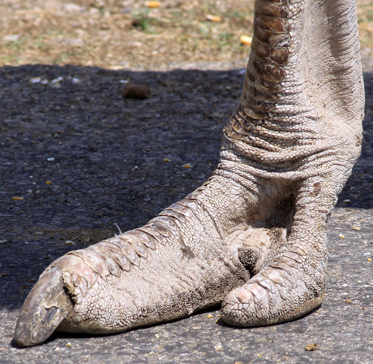Страусы — единственные птицы в мире, имеющие только два пальца.
Еще одна уникальная, но малоизвестная особенность страусов это раздельное выведение кала и мочи из организма. Как известно, у всех птиц моча и кал выводятся одновременно в виде полужидкого помета. А вот у страусов обе субстанции выводятся по отдельности, это единственные птицы в мире, у которых есть мочевой пузырь. У страусов нет зоба, но их шея очень растяжима и они могут заглатывать довольно крупную добычу целиком. Зрение у этих птиц развито отлично. Наружные слуховые отверстия явственно проступают на слабо оперенной голове и даже напоминают своей формой маленькие ушки.
Наиболее оперены у страусов туловище, хвост и крылья, шея, голова и верхняя часть ног покрыты коротким пухом и могут выглядеть почти голыми. Нижняя часть ног покрыта крупной чешуей. У африканских страусов четко выражен половой диморфизм: самцы крупнее и имеют черную окраску, концы перьев на крыльях и хвосте белые, самки серо-бурые и более мелкие. Кроме того разные подвиды африканского страуса могут отличаться цветом клюва и лап, у одних подвидов они песочно-серые, у других могут иметь ярко-розовую окантовку или быть сплошь красными.
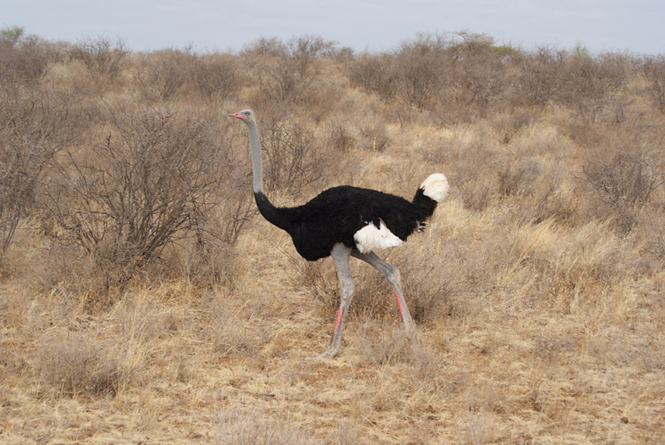Самцы сомалийского подвида африканского страуса имеют розовую окраску клюва и лап.
Ареал обитания страуса охватывает почти всю Африку, не встречается эта птица только в Северной Африке и Сахаре. В былые времена страусы встречались даже в прилегающих к африканскому континенту районах Азии — на Аравийском полуострове и в Сирии. Страусы — обитатели открытых равнин, они населяют травянистые саванны, сухие редколесья и полупустыни. Густых зарослей, болотистых равнин и пустынь с зыбучими песками они избегают, так как не могут там развить высокую скорость бега. Страусы оседлы, чаще встречаются небольшими группами, в исключительных случаях могут образовывать стаи до 50 особей, причем нередко пасутся вместе с зебрами и различными видами антилоп. Стая не имеет постоянного состава, но в ней царит строгая иерархия. Птицы высшего ранга держат хвост и шею вертикально, более слабые особи — наклонно.
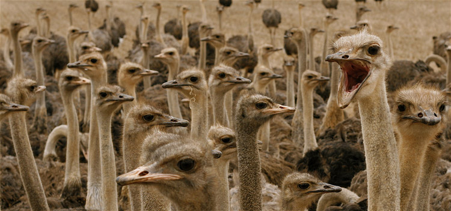Стая страусов на ферме
Активны страусы преимущественно в сумерках, в сильный полуденный зной и ночью они отдыхают. Ночной сон страуса состоит из коротких периодов глубокого сна, когда птица ложится на землю с вытянутой шеей, и продолжительных периодов полудремы, когда она сидит с поднятой шеей и закрытыми глазами.
Страус — птица глуповатая, но очень осторожная. Во время кормежки страусы часто подымают голову и окидывают зорким глазом окрестности. Увидеть движущийся объект на глади равнины они могут за километр. При подозрении на опасность страус старается удалиться заранее, не допуская сближения с хищником. Поэтому за поведением страусов часто следят другие травоядные животные, которые не столь зорки и полагаются больше на обоняние. При необходимости страус может бежать со скоростью 70 км/час, то есть свободно обгоняет коня, в исключительных случаях страус может разогнаться до 80-90 км/час (на коротком отрезке дистанции). Во время бега страус может делать резкие повороты, не сбавляя скорости, а также внезапно ложиться на землю. В античные времена древнегреческий ученый Плиний Старший писал, что страусы прячут голову в кустарник, полагая, что их не заметят. В этом утверждении нет правды, но оно прижилось и со временем трансформировалось в поверье, будто страусы в случае опасности зарывают голову в песок. В действительности никаких, похожих на это утверждение, реакций страусы не демонстрируют.
Нужно отметить, что осторожность страусы проявляют только во внегнездовой период. Во время насиживания кладки и заботы о потомстве они превращаются в очень смелых и агрессивных птиц. В этот период времени не может быть и речи о том, чтобы скрыться от опасности. На любой движущийся предмет страус реагирует мгновенно и направляется ему наперерез. Сначала птица раскрывает крылья и старается напугать противника, если это не помогло, то страус бросается на врага и топчет его ногами. Ударом лапы самец страуса может проломить череп льву, добавьте к этому огромную скорость, которую птица развивает также непринужденно, как и спасаясь от врага. Ни одно африканское животное не осмеливается вступить в открытый бой со страусом, но некоторые пользуются недальновидностью птицы. При групповой атаке гиены и шакалы отвлекают на себя внимание страуса и, пока он отпугивает одних агрессоров, их сообщникам часто удается зайти с тыла и утащить из гнезда яйцо.
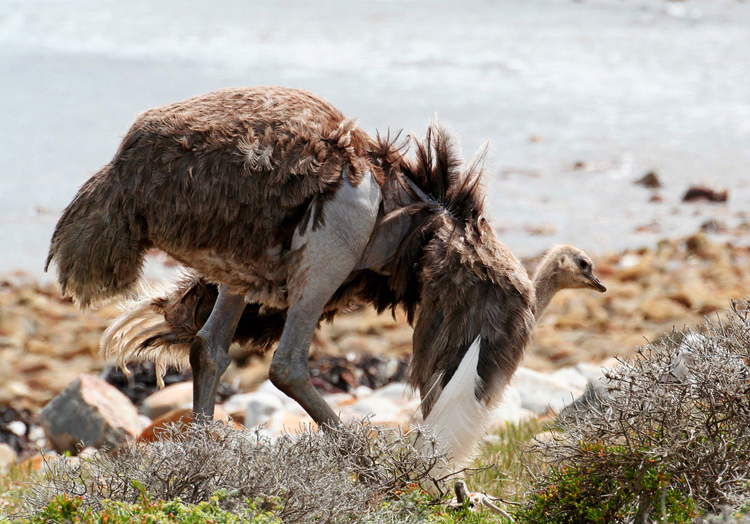Самка страуса в угрожающей позе.
Страусы питаются преимущественно растительной пищей, но их скорее можно назвать всеядными. Наряду с травой, листьями и плодами, они могут поедать насекомых, мелких ящериц, черепах и даже птиц и зверей. Интересно, что эти птицы предпочитают подбирать корм с земли, и редко ощипывают ветви. Страусы глотают добычу целиком, в том числе и твердые плоды. Также эти птицы часто глотают камешки, которые помогают перетирать пищу, у взрослой птицы в желудке может скапливаться до 1 кг гальки. По этой причине в неволе страусы любят пробовать «на зуб» все подряд и часто глотают несъедобные предметы, например, пуговицы, монеты, гвозди. Страусы могут подолгу обходиться без воды, но при случае охотно пьют и купаются.
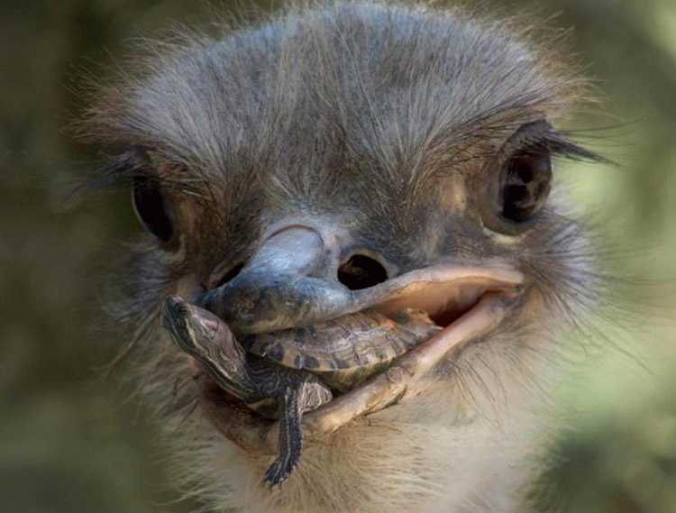Страус собрался пообедать новорожденной черепахой.
Сезон размножения у страусов, обитающих во влажных районах, длится с июня по октябрь. Страусы, живущие в пустыне, размножаются круглый год. В этот период стада страусов распадаются, и самцы занимают участки, которые тщательно охраняют от конкурентов. Завидев соперника страус бросается ему наперерез и норовит ударить ногами, самок страус принимает благосклонно. Для привлечения их внимания страус может издавать рык, прогоняя воздух через горло. При приближении самки страус начинает токовать, для этого он расправляет крылья, размах которых может достигать 2 м. Самец садится на лапы, поочередно машет крыльями и склоняет голову то к одному плечу, то к другому.
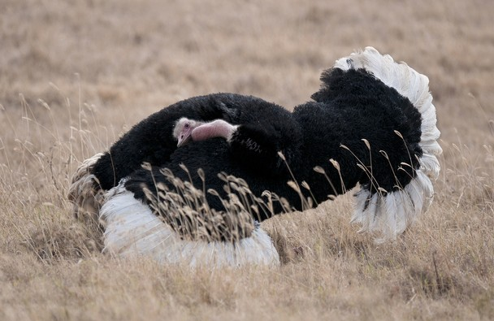Токующий страус.
Страусы — полигамные птицы, поэтому каждый самец норовит собрать вокруг себя побольше избранниц и спаривается со всеми самками. Однако в гареме страуса одна самка всегда занимает лидирующее положение и может задержаться около самца до конца гнездования, в то время как остальные удаляются. Самец вырывает лапами в грунте ямку, в которую самки поочередно откладывают яйца. С первого момента и до конца насиживания все заботы о потомстве ложатся на самца. Пока он насиживает первые яйца самки буквально перед ним сносят яйца, которые он бережно подкатывает под себя. Каждая самка откладывает 7-9 яиц, а всего их в гнезде обирается 15-25. В местах массовой охоты на страусов наблюдается дефицит самцов (так как именно их перья ценятся выше всего), поэтому в гнездах могут скапливаться до 50 яиц. Вероятность выживания такой кладки ничтожна, поскольку самец не может прикрыть все яйца своим телом и они остаются ненасиженными.
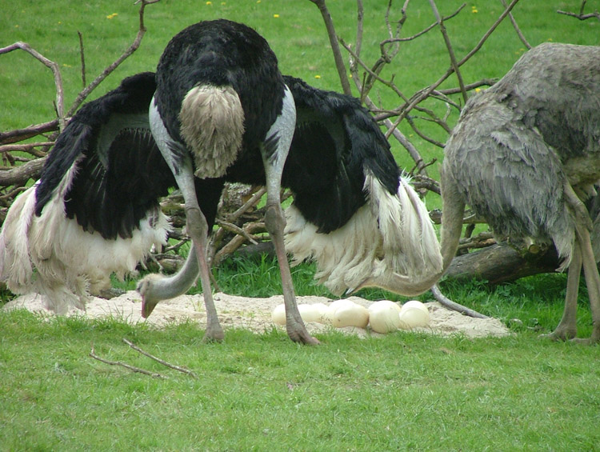Самец и самка африканского страуса у гнезда.
Инкубация длится 1,5 месяца, насиживает только самец, доминирующая самка может находится поблизости, но участия в насиживании не принимает. Следует отметить, что самец сидит на гнезде в основном ночью, а днем оставляет кладку на волю солнца, чтобы покормиться. Именно в этот момент гнездо страуса уязвимо перед гиенами, шакалами и стервятниками, которые охотятся за яйцами.
Яйца страуса являются одновременно самыми крупными и… самыми мелкими в мире. По абсолютным размерам яйца страусов, весящие 1,5-2 кг, самые большие среди всех птиц, а вот относительно размеров тела взрослой птицы — самые маленькие. Яйца страуса имеют почти шаровидную форму (15 см в длину, 13 см в ширину) и белую глянцевую скорлупу. Скорлупа яиц очень толстая и прочная и способна выдержать вес взрослого человека. Но эта же скорлупа является серьезным испытанием для птенцов страуса: чтобы вылупиться птенец несколько часов долбит скорлупу проделывая небольшое отверстие, а затем расширяет его упираясь затылком в свод яйца.
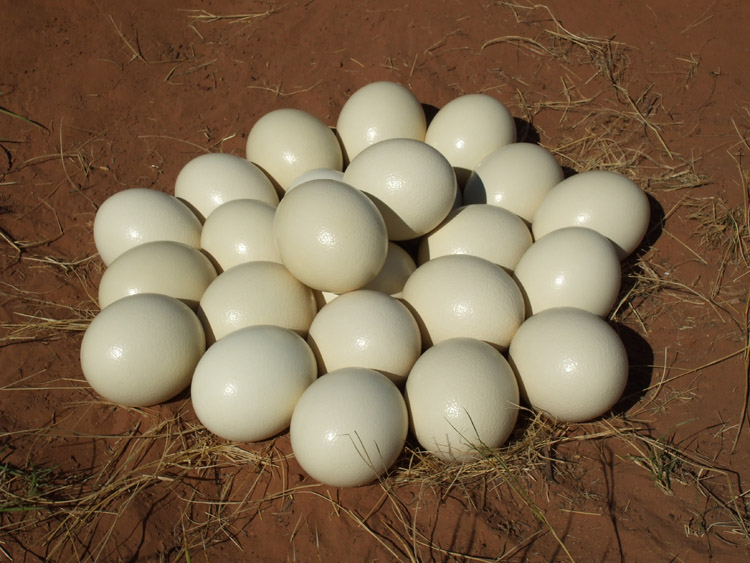Кладка яиц африканского страуса.
Насиживание продолжается 6 недель, вылупившиеся с таким трудом страусята с первых минут жизни могут следовать за отцом и разыскивать пищу самостоятельно. Интересно, что оставшиеся в гнезде яйца страус часто разбивает ногами, запах тухлых яиц привлекает мух, которых склевывают страусята. Вообще птенцы страуса, в отличие от взрослых птиц, питаются только животной пищей, в основном насекомыми. Новорожденные страусята покрыты мелкими щетинообразными перьями и имеют полосатую желто-бурую окраску, они быстро растут и вскоре могут развивать скорость до 50 км/час. Несмотря на это птенцы уязвимы перед хищниками, только 15% птенцов доживает до года.
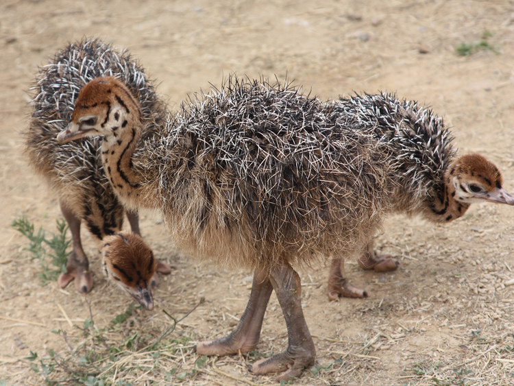Птенцы африканского страуса.
Самцы страусов — образцовые родители, они водят молодняк, охраняют его от хищников и оберегают от палящего солнца, распластывая крылья, в тени которых прячутся птенцы. Птенцы страусов очень дружные и следуют друг за другом плотной стайкой, при встрече двух семей, страусята объединяются в одну группу и в дальнейшем уже не разлучаются. Это приводит к конфликтам между родителями, каждый из самцов считает малышей своими и между ними завязывается бой за право исполнять родительские обязанности. Победитель уводит за собой всю группу и не делит птенцов на приемышей и своих. Взрослый наряд страусята одевают в два года, а половой зрелости достигают к 3-4 годам. Страусы живут в среднем 30-40 лет, в неволе могут доживать до 50.
В природе у страусов мало врагов, наибольшие потери в популяции наблюдаются во время инкубации яиц и воспитания молодняка. Помимо гиен, шакалов и стервятников, охотящихся за яйцами, на птенцов могут нападать львы, гепарды и леопарды. Взрослые страусы попадают в лапы хищников, только если им удалось подстеречь птицу в засаде и напасть со спины.
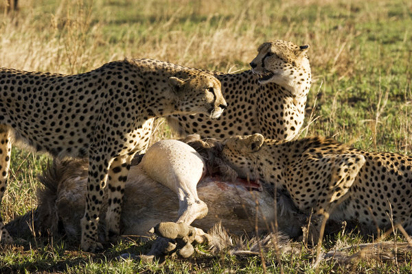Три гепарда убили страуса.
Еще в античные времена на страусов охотились ради перьев. Так как перья страуса не имеют оформленного опахала, то на ощупь они мягкие и красиво колышутся на ветру, поэтому их использовали для изготовления плюмажей воинов, опахал, а начиная со средних веков — для изготовления вееров и украшения женских шляп. Пик спроса на перья пришелся на XVIII век, когда страусы были истреблены на больших территориях, а численность арабского подвида была подорвана настолько, что к 1966 году он полностью вымер.
Повсеместное истребление африканского страуса побудило людей начать разведение этих птиц в неволе. Первая страусиная ферма появилась в XIX веке в Южной Америке, а затем страусов стали разводить в Африке, Северной Америке, Южной Европе. В неволе эти птицы очень неприхотливы и выносливы. Некоторые фермеры даже приучали страусов нести наездника (вес человека эта птица выдерживает свободно) и ходить в упряжке, однако распространения эти опыты не получили. Агрессивный в период размножения и труднообучаемый страус, как тягловая сила не представляет интереса. На современных страусиных фермах находят все больше применения продуктам, получаемым от этих птиц. Теперь мясо и яйца страусов часто поставляются в рестораны экзотической кухни. Мясо страусов постное и жестче, чем у любой другой домашней птицы, по вкусу оно напоминает говядину. Яйца стали излюбленным материалом для поделок и художественной резьбы, из них изготавливают подсвечники, сувениры. Спрос на страусиные перья в наше время не так велик, зато очень ценится прочная кожа страуса. После выделки получается материал с уникальной фактурой, поэтому страусиная кожа относится к элитным сортам сырья. Благодаря разведению в неволе популяции диких страусов в наше время ничто не угрожает.
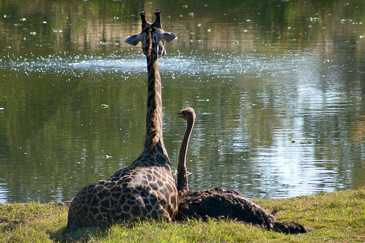В зоопарке города Тампа (США) подружились 3-летний жираф Биа и 10-летний страус Вилма.